Native and fast
Rust and egui, with no browser engine or JVM inside. It opens in about a third of a second on a recent Mac, and results stream in as you scroll, so even a huge table shows at once.
PostgreSQL · MySQL and MariaDB · SQLite · SQL Server · DuckDB · ClickHouse · Redis and Valkey · MongoDB · Elasticsearch and OpenSearch · Cassandra and ScyllaDB · DynamoDB · Athena · BigQuery · Trino and Presto
DbRover is a native desktop database tool written in Rust: it opens in a moment and stays quick with millions of rows. Safety levels guard production, reports gather several databases into one file, and AI assistants reach your databases over MCP only as far as you allow. Free, open source, and no account to make.
Also for Linux: AppImage · .deb · every download
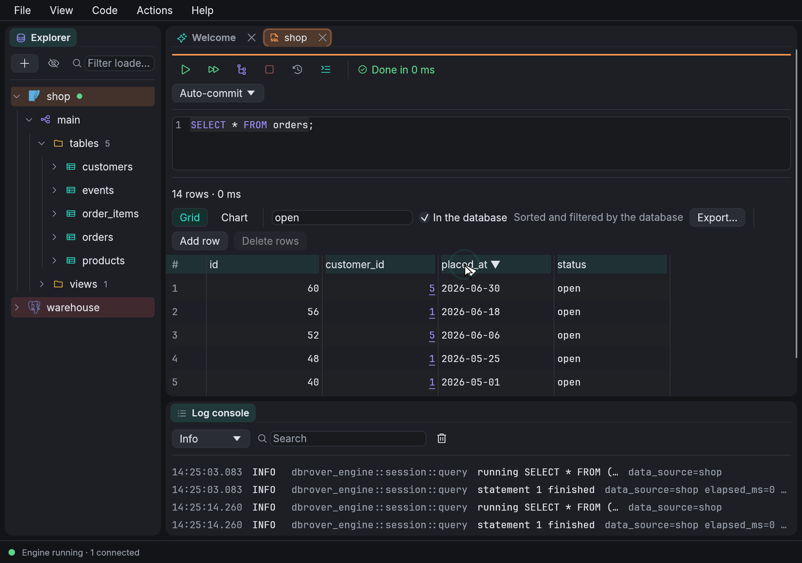
SELECT * FROM orders with
completion's help, running it, and having the database filter the 60 orders to the open
ones and sort them, newest first.
Rust and egui, with no browser engine or JVM inside. It opens in about a third of a second on a recent Mac, and results stream in as you scroll, so even a huge table shows at once.
A built-in MCP server, off until you allow a project, that only reads unless you allow more. Safety levels guard production, and read-only works on every database.
MIT or Apache-2.0 on macOS, Windows and Linux. Nothing to sign up for, and settings in plain files you can read and keep in Git.
AI assistants through MCP
DbRover includes an MCP server. Allow a project, copy its configuration into Claude Desktop, Claude Code, Cursor or another client, and the assistant can list, describe, explain and query that project's data sources, with the DbRover window closed.
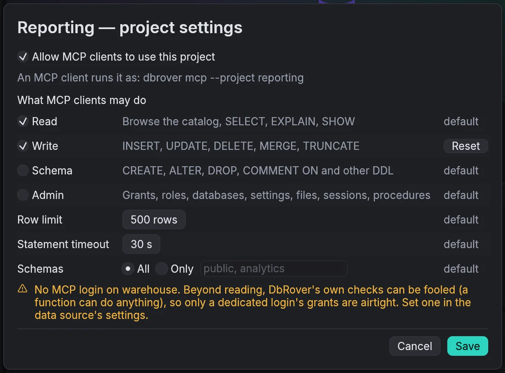
Reports
A report is a query you run again and again with new values, and the files it
writes each time. It reads one data source or several, combines them in DuckDB SQL
or PRQL, and writes CSV, Excel and Parquet files, with charts of them as SVG or
PNG. It runs in a process of its own, within limits you can see, from its tab or
from dbrover report run in a terminal, cron or CI.
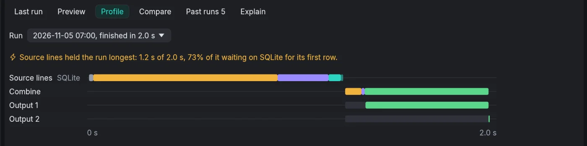
Staying safe
Each data source has a safety level. Normal asks before an
UPDATE or DELETE without WHERE.
Careful asks before every change, naming the data source, and opens
consoles in manual commit. Read-only refuses changes on every
database, and PostgreSQL, MySQL, MariaDB, SQLite, DuckDB and ClickHouse refuse them in
their own read-only modes too.
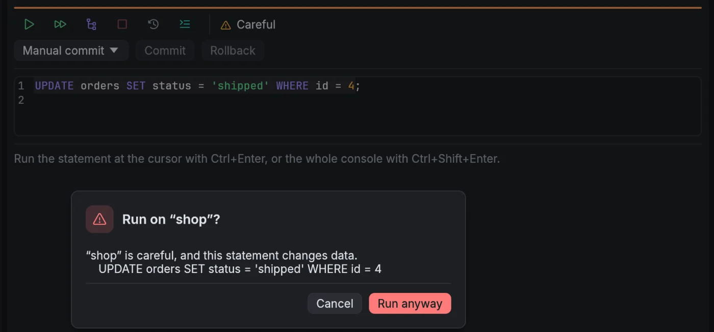
Writing SQL
Completion suggests tables after FROM and columns after an alias, and
follows CTEs and subqueries; cid finds customer_id. Problems
are marked as you type: = NULL, an UPDATE without
WHERE, an unknown column, and what the database itself says.
.sql files; edits made elsewhere are picked up.:name parameters, asked for as you run; find and replace with regular
expressions.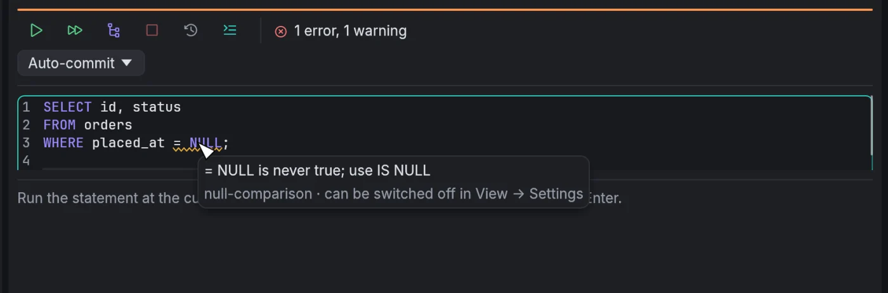
Charts
Chart, beside Grid, draws the rows as bars, lines or a scatter, and follows the grid as you sort, filter and load more. Nothing runs again.
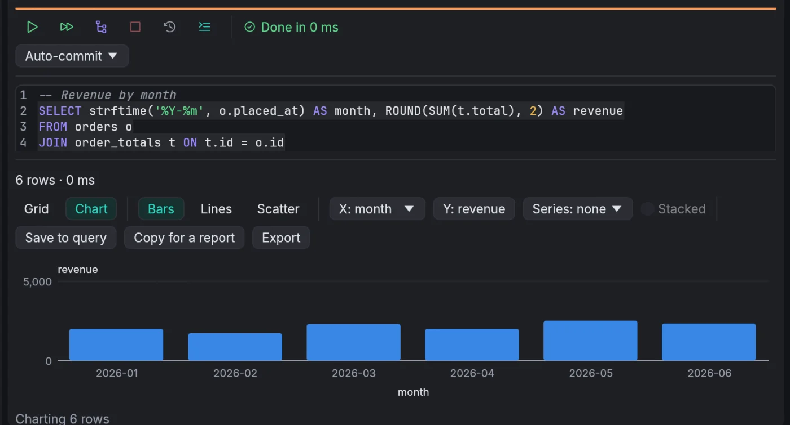
Query plans
Explain draws the plan as a tree of steps and tints the costliest. Explain analyse runs the statement and shows, beside each estimate, the rows each step really returned, how many times it ran and how long it took.
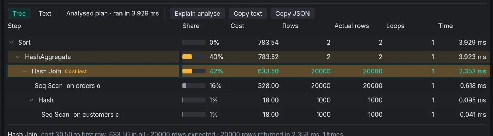
Beyond SQL
Redis, Valkey and Dragonfly, MongoDB, Elasticsearch and OpenSearch, Cassandra and ScyllaDB, and DynamoDB each get a console in their own language, with completion, and an explorer that knows their shape.
SCAN so even
millions never stall the server.# Redis, Valkey or Dragonfly
HGETALL user:42
// MongoDB
db.orders.find({status: "open"}).sort({_id: -1})
# Elasticsearch or OpenSearch
GET /orders/_search
{ "query": { "match": { "status": "open" } } }Cloud data
Athena, BigQuery and Trino are data sources like any other, and a DuckDB data source reads Parquet, CSV and JSON files and Iceberg and Delta tables in Amazon S3, Google Cloud Storage or Azure Blob Storage, joined with its own tables.
-- DuckDB, reading a bucket
SELECT c.name, sum(o.total) AS total
FROM 's3://sales/2026/*.parquet' o
JOIN customers c ON c.id = o.customer_id
GROUP BY c.name;
-- BigQuery: 1.2 GB to scan, asked first above your limit
SELECT country, count(*)
FROM analytics.events
WHERE day >= '2026-10-01'
GROUP BY country;The results grid
Rows arrive 500 at a time. Sort and filter the rows loaded, or tick In the database to have it sort and filter every row.
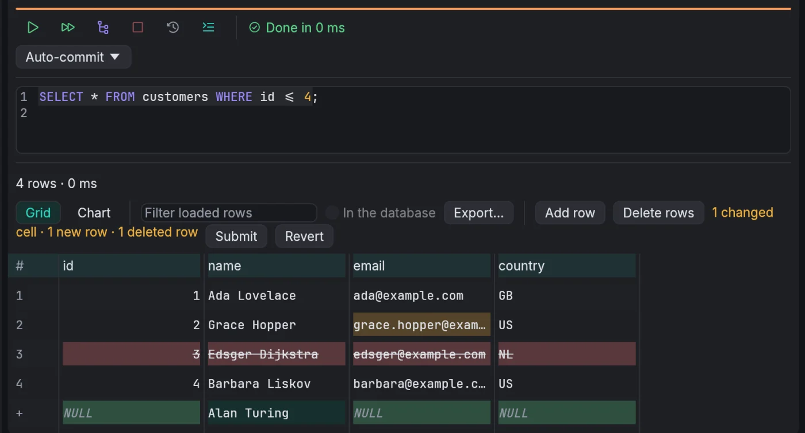
Changing the schema
Dialogs for tables, indexes, views and materialized views, schemas, and PostgreSQL users and roles write the SQL and show it. Nothing runs until you press Execute, or open it in a console instead.
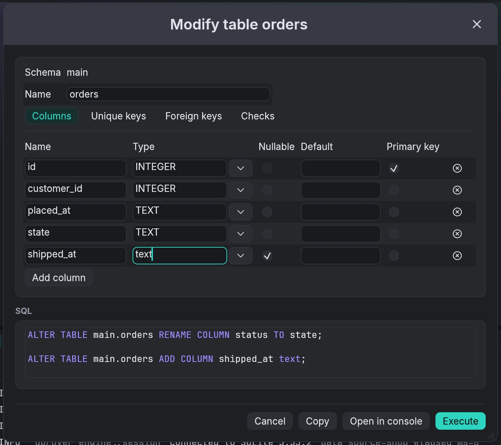
Diagrams and schema compare
A diagram draws the tables you pick, or a whole schema, with their columns and the foreign keys between them, laid out for you and saved as you arrange it.
dbrover schema compare in CI.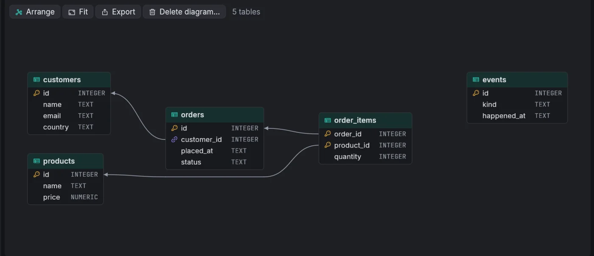
Connecting anywhere
On your laptop, on a server behind SSH, or in the cloud: DbRover connects to the database where it already runs, and signs in the way your team already does.
known_hosts.verify-full, with your own CA file and no OpenSSL to
install.${VARIABLE} placeholders in connection settings.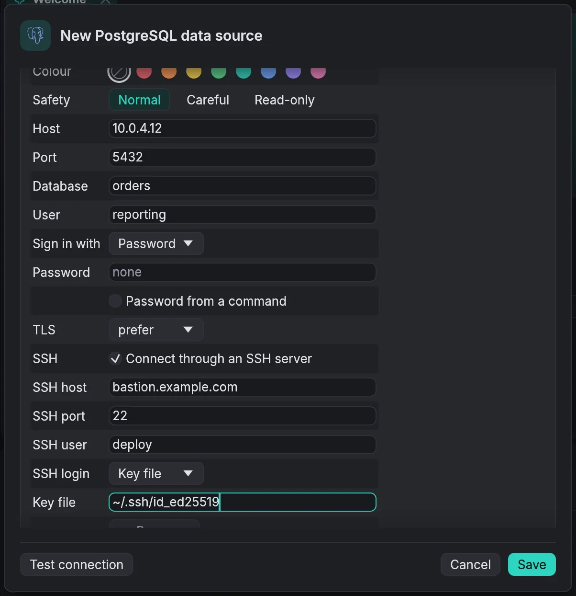
Making it yours
DbRover keeps its settings in files you can read and edit, next to each other.
keymap.toml rebinds the shortcuts.actions.toml adds your own SQL
to the explorer's and the grid's menus, with names and values quoted for you.snippets.toml adds snippets
to completion, with fields to Tab through.theme.toml changes the light
and dark themes' colours.exports.toml adds export
formats of your own, from templates or programs.git pull made while it runs.# actions.toml
[[action]]
id = "row-count"
name = "Row count"
applies_to = ["table", "view"]
sql = "SELECT count(*) FROM {qualified_name}"
# snippets.toml
[[snippet]]
trigger = "sel"
body = "SELECT ${1:*}\nFROM ${2:table};"
# theme.toml
[dark]
primary = "#9a8bff"And the services that run them: Amazon RDS, Aurora and Redshift, Cloud SQL, Azure SQL, Synapse and Fabric, Neon, Supabase, ClickHouse Cloud, MongoDB Atlas, Elastic Cloud, Starburst Galaxy and MotherDuck, with Parquet, CSV, Iceberg and Delta files in object storage. Oracle is planned.
A universal app for Apple silicon and Intel, macOS 11 or newer.
.dmgOr with Homebrew:
brew install --cask navasvarela/tap/dbroverNot signed by Apple yet, so the first launch needs Open Anyway.
For 64-bit Intel and AMD: an AppImage for most distributions, or a package for Debian and Ubuntu.
An installer for Windows 10 and 11 on 64-bit Intel and AMD. It installs DbRover for you alone, without administrator rights.
InstallerNot signed yet, so SmartScreen blocks the first run: More info, then Run anyway.
DbRover asks GitHub for a newer release when it starts, or from Help ›
Check for updates…. On macOS and in the AppImage, Install and
restart checks the update's signature and puts it in place, and so do Windows
copies installed with the installer; the .deb opens the
release page instead. The check sends nothing about you,
and can be turned off.
Every release has a
SHA256SUMS
file. In the folder with your download:
shasum -a 256 -c SHA256SUMS --ignore-missingFree and open source under MIT or Apache-2.0. The source, every release and the design docs are on GitHub.